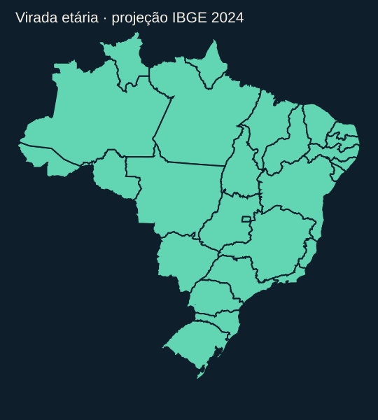

BRASIL EM ESCALA
Quando idosos superam crianças em cada estado?
Cada estado acende no primeiro ano da projeção IBGE 2024 em que a população de 60 anos ou mais supera a de 0 a 14 anos. Esses anos são projetados, não censos anuais nem resultados garantidos.

Na projeção IBGE 2024, as UFs cruzam entre 2020 (RS) e 2047 (RR); SP cruza em 2026 e o Brasil em 2029.
Ver tabela completa, dados e método
Primeiro ano por UF
| UF | Ano |
|---|---|
| RS | 2020 |
| RJ | 2023 |
| MG | 2024 |
| SP | 2026 |
| PR | 2027 |
| BA | 2029 |
| ES | 2029 |
| RN | 2029 |
| DF | 2030 |
| PB | 2030 |
| PI | 2030 |
| SC | 2030 |
| CE | 2031 |
| PE | 2031 |
| GO | 2032 |
| SE | 2032 |
| AL | 2034 |
| MS | 2034 |
| RO | 2035 |
| MA | 2036 |
| TO | 2036 |
| PA | 2038 |
| MT | 2040 |
| AC | 2041 |
| AP | 2041 |
| AM | 2043 |
| RR | 2047 |
Dados e método
Primeiro ano em 2000–2070 com 60+ > 0–14 na mesma linha UF/ano; sem interpolação estatística.
Fonte: IBGE, Projeção da População 2024. ODS SHA-256: 7508167cba5d734f2f59a094c8f7fabad676964353391a0a4ef7c0aab0eb87cc.
Contornos das UFs: API de malhas do IBGE, versão simplificada, SHA-256 07c671aa87aa1ab296c446de6294df9827112782537b996c0a160284907e7c0f.
- IBGE population projections, revision 2024; years are modelled estimates/projections, not annual censuses.
- 60+ is not interchangeable with 65+; the SP crossing changes from 2026 to 2033 under 65+.
- The Seade SP projection is a distinct series and cannot be mixed with IBGE rows or years.
- A projected crossover year is not a forecast guarantee or causal result.
- The plotted cumulative count is derived from projected crossing years, not observed migration or an annual census.
- The Seade SP 2025 panel uses a distinct projection and is context only, not part of the IBGE calculation.
O painel Seade para SP é outra série; não entrou no cálculo IBGE.